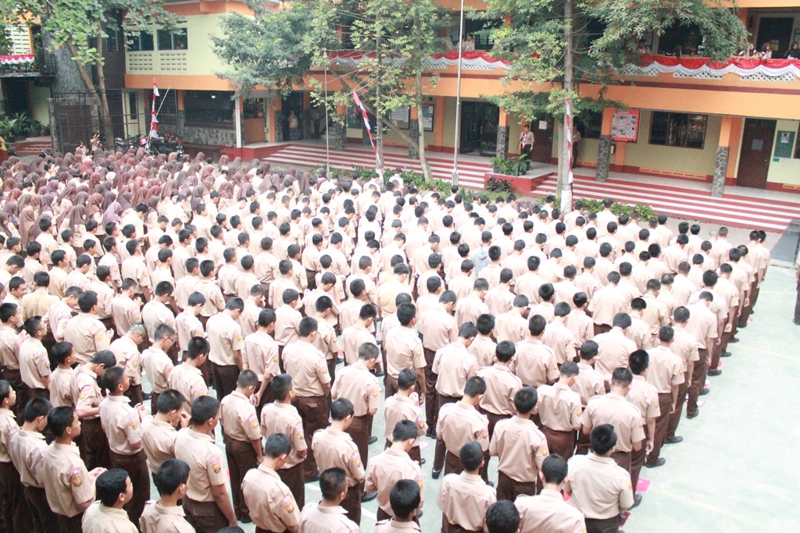

Ekstrakulikuler
SMK Wikrama Bogor menyelenggarakan cukup banyak kegiatan Ekstrakulikuler
yang mempunyai tujuan untuk ; mengembangkan potensi siswa itu dengan
secara optimal serta terpadu yang melingkupi bakat, minat, serta kreativitas,
memantapkan kepribadian siswa yang agar dari usaha dari pengaruh negatif
serta bertentangan itu dengan tujuan pendidikan, serta menyiapkan peserta
didik itu supaya dapat menjadi warga masyarakat yang mempunyai akhlak mulia,
yang demokratis, yang menghormati hak-hak asasi manusia dan mampu menjadi
pemimpin.
Program Ekstrakulikuler SMK Wikrama Bogor antara lain :
1.Pramuka
2.Paskibra


3.Silat


4.Karate
5.Taekwondo
6.Angklung


7.Seni Musik Gitar Modern & Band
8.Seni Musik Degung

9.Seni Musik Nasyid
10.Seni Tari
11.Seni Teater
12.Kelompok ilmiah Remaja(KIR)

13.Baketball

14.Futsal